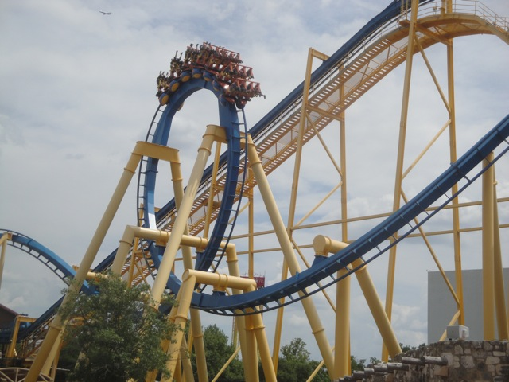
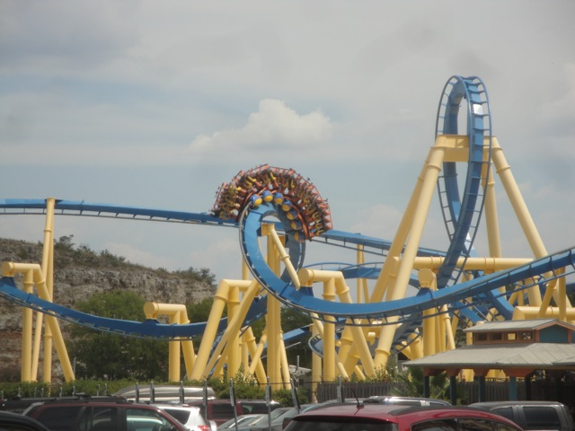
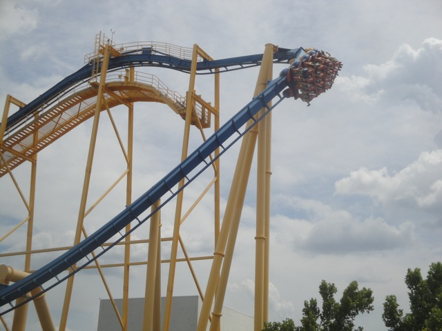
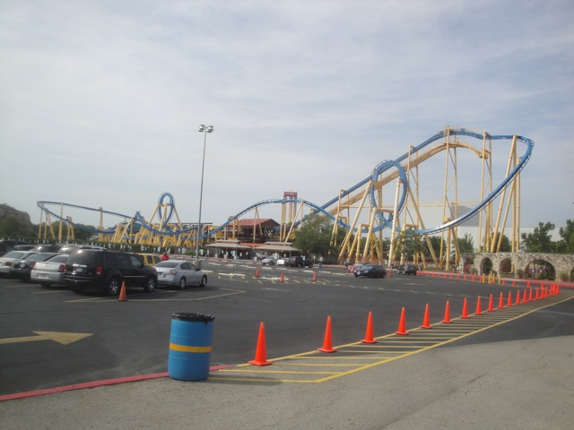

| |
Goliath Review

We're here at Six Flags Fiesta Texas. Today's ride we'll be reviewing for you is Goliath, the parks Batman the Ride clone. Fun ride and all. And man oh man. Does this ride have a history. It first got built at some random Japanese Park that wound up closing. Then Six Flags bought the ride and sent it to Six Flags New Orleans. HURRICANE KATRINA!!! That park's gone now, and they sent the Batman clone to Six Flags Fiesta Texas. Which is in San Antonio, also home to Sea World San Antonio, which is home to another Batman the Ride Clone. So yeah. Not the best place to relocate the ride to. But where else were they going to put the ride? And hey, if San Antonio can have like 20 different Starbucks, why can't they have 2 Batman the Ride clones? Oh, on another random note. Can we please stop naming rides Goliath? Seriously? It's getting annoying now. This isn't a Goliath AT ALL!!! It's one of the last rides that should be called Goliath. After getting in the seats and pulling down the shoulder restraint, we leave the station. As we climb the lifthill, you can get a good view of Six Flags Fiesta Texas to your left, and the parking lot to your right. While looking to the right, you notice that everything is going in the wrong direction. Yep, this is a mirror image Batman clone. So yeah. It'll definetly seem weird going through the course backwards. Once you reach the top of the lifthill, there isn't much time to say anything until you're swept into the first drop. While it's not anywhere close to the greatest first drop in the world, it's still a pretty good first drop that gives you more than enough speed to complete the course. After the first drop, you soar into a vertical loop. I hope your ass likes the seat because it's going to glue itself to the seat for the next 60 seconds. After the first loop, we head for the best part of the ride, THE HEARTLINE SPIN!!!!! As you reach the Heartline Spin, it whips you through!! It tickles your stomach as you just get WHIPPED through it!!! While I admit, it's not nearly as powerful as Kumba, it's definetly one of the more powerful Heartline Spins out there. After the Heartline Spin, We get to go through yet another loop. As we flip head over heels once again, you just get happy. After that loop, you roar up into a helix. After surging upwards, you quickly go through a turn. This is the only part of the ride to catch your breath in. But don't get to attached to it because right before you know it, you're right back in the action. Then you head straight into a corkscrew. The corkscrew just plows you through. And when that's done, you immedietly fly thorugh a turn. And that turn just slams you into corkscrew #2. And then you just fly through that. After that, you roar into a turn. You feel the Gs in your legs! But then, you just slam into the brake run!!! You never even noticed that everything was backwards due to just how powerful this ride is. After seeing this ride, I can totally see how this got cloned all around the world!! This ride may not look so great. But my god, This little bastard has POWER!!!! I don't even mind that there are two in the same city, because this ride is just that good. If you have never been on a Batman the Ride Clone, You HAVE to ride it if you're visiting. I'd even recommend riding Goliath here even if you have Batman @ your home park if the line is less than 15 min.
8/10
Location: Six Flags Fiesta Texas
Opened at Thrill Valley in 1995
Relocated to Six Flags New Orleans in 2003
Relocated to Six Flags Fiesta Texas in 2008
Built by: B&M
Last Ridden: July 14, 2013
I have ridden this exact same ride at the following parks.
La Ronde
Sea World San Antonio
Six Flags Great Adventure
Six Flags Great America
Six Flags Magic Mountain
Six Flags Over Georgia
Six Flags Over Texas
Six Flags St. Louis
Goliath Photos



Home
|